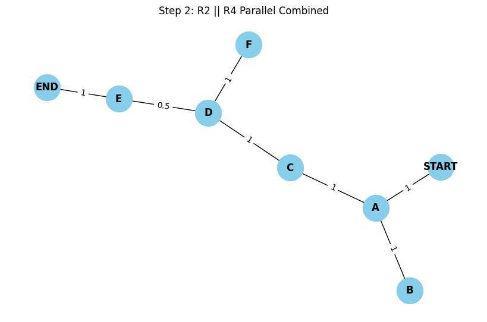

Problem 1
Circuits Problem: Compute Equivalent Resistance Using Graph Theory
Introduction
Calculating the equivalent resistance between two nodes in a resistor network is fundamental in electrical engineering. As circuits become more complex, traditional simplification using only series and parallel rules becomes inefficient and error-prone. Graph theory offers a systematic, scalable, and automatable approach to this challenge.
Graph-Theoretic Approach
Modeling the Circuit
- Vertices (nodes) represent junctions.
- Edges represent resistors with a weight equal to their resistance value.
- Objective: Find the equivalent resistance between two distinguished nodes:
STARTandEND.
Mathematical Tools
- Graph reduction using simplification rules.
- Resistor transformations: Series, parallel, and sometimes Δ–Y (delta-wye) if needed.
- Traversal methods: DFS/BFS for pathfinding or component detection.
- Edge contraction and node elimination via Kirchhoff's laws.
Problem Setup (Based on Image)
Given Circuit
We are given the following circuit configuration:
- Resistors: \(R_1, R_2, R_4, R_5, R_6, R_7\)
- Nodes:
STARTandEND -
Key structures:
-
\(R_2\) and \(R_4\) are in parallel
- That parallel block is in series with \(R_7\)
- The block above is in series with two \(R_6\) resistors
- Entire path in parallel with a vertical \(R_2\)
- Entire configuration is in series with \(R_5\) between START and END
Step-by-Step Reduction
Let’s denote resistances:
-
Let’s define:
-
\(R_2 = x\)
- \(R_4 = y\)
- \(R_6 = z\)
- \(R_5 = a\)
- \(R_7 = b\)
Step 1: Simplify Parallel \(R_2 \parallel R_4\)
\[
R_{24} = \left( \frac{1}{R_2} + \frac{1}{R_4} \right)^{-1}
= \left( \frac{1}{x} + \frac{1}{y} \right)^{-1}
\]
Step 2: Add \(R_7\) in Series
\[
R_{\text{lower}} = R_{24} + R_7
= \left( \frac{1}{x} + \frac{1}{y} \right)^{-1} + b
\]
Step 3: Add Two \(R_6\) in Series
\[
R_{66} = 2 \cdot R_6 = 2z
\]
\[
R_{\text{stack}} = R_{66} + R_{\text{lower}}
= 2z + \left( \left( \frac{1}{x} + \frac{1}{y} \right)^{-1} + b \right)
\]
Step 4: Put the result in Parallel with \(R_2\) (left vertical branch)
\[
R_{\text{bigparallel}} = \left( \frac{1}{x} + \frac{1}{R_{\text{stack}}} \right)^{-1}
\]
Step 5: Add \(R_5\) in Series to Get Final Resistance
\[
R_{\text{eq}} = R_5 + R_{\text{bigparallel}} = a + \left( \frac{1}{x} + \frac{1}{2z + \left( \left( \frac{1}{x} + \frac{1}{y} \right)^{-1} + b \right)} \right)^{-1}
\]
This is the final equivalent resistance between START and END.

Full Pseudocode
def equivalent_resistance(x, y, z, a, b):
from sympy import symbols, simplify
# Step 1: R2 || R4
R24 = 1 / (1 / x + 1 / y)
# Step 2: add R7
R_lower = R24 + b
# Step 3: R6 + R6
R66 = 2 * z
R_stack = R66 + R_lower
# Step 4: parallel with vertical R2
R_parallel = 1 / (1 / x + 1 / R_stack)
# Step 5: add R5
R_total = a + R_parallel
return simplify(R_total)
Algorithm Analysis
| Feature | Notes |
|---|---|
| Scalability | Efficient for sparse graphs using iterative reduction. |
| Complexity | Depends on detection of series/parallel: \(O(n)\) to \(O(n \log n)\). |
| Flexibility | Adaptable to graphs with cycles and bridges (e.g., using star-delta). |